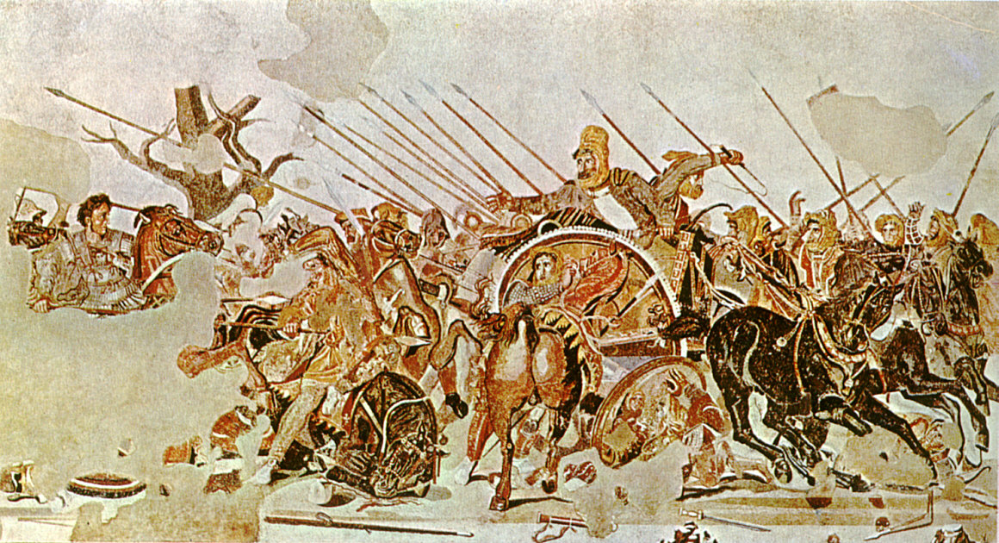
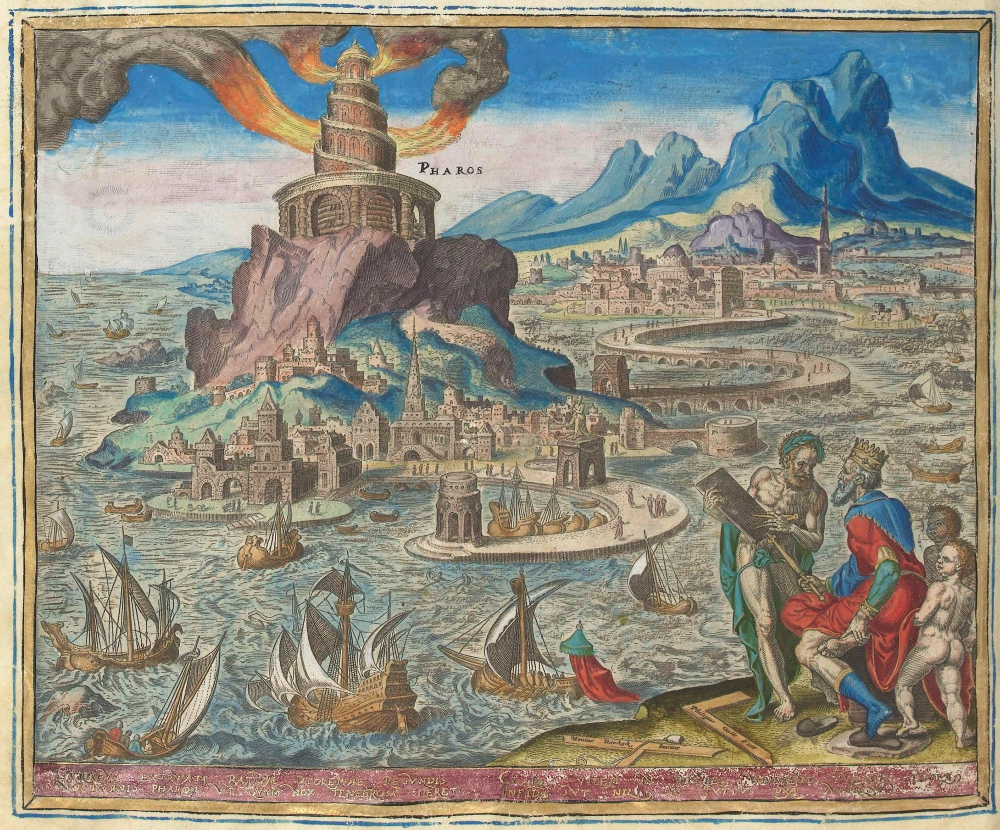
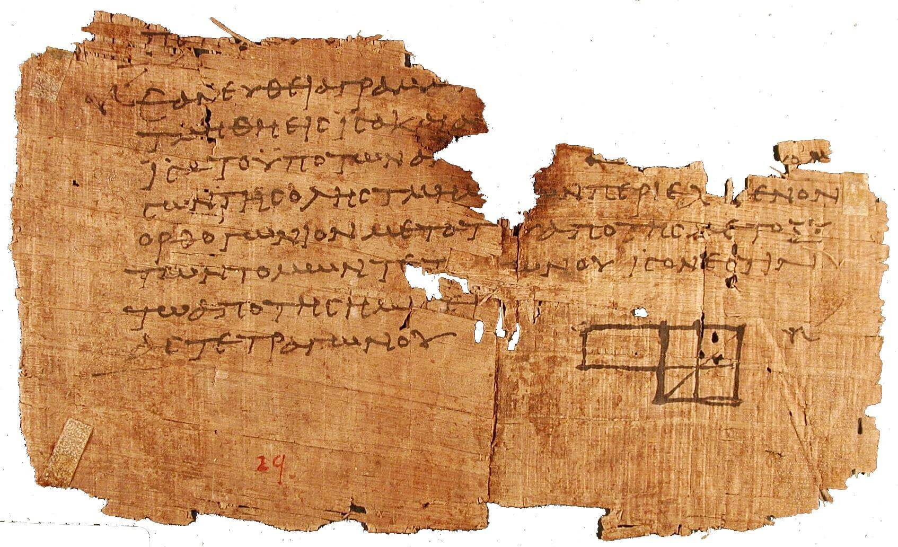
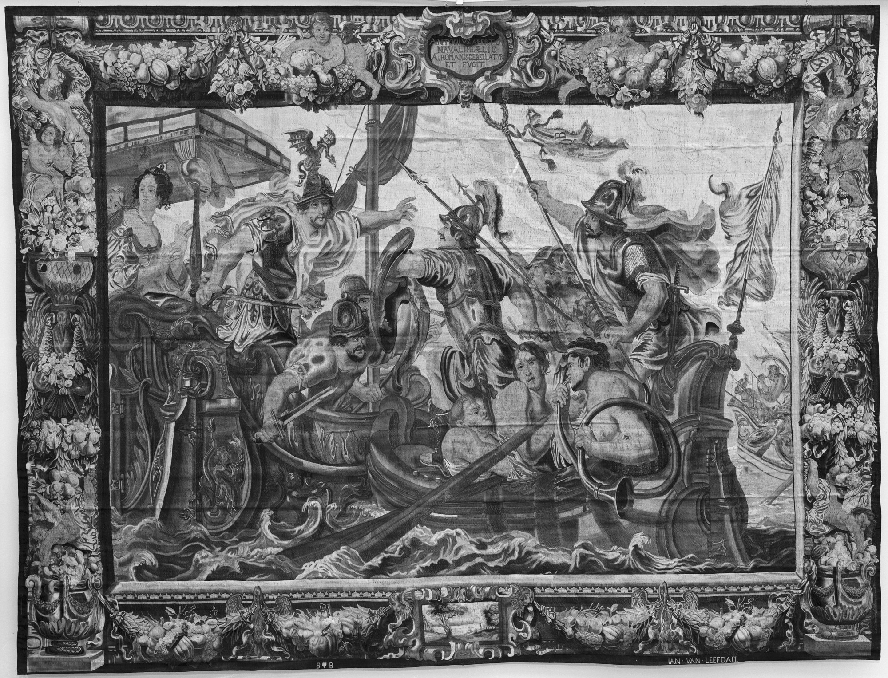
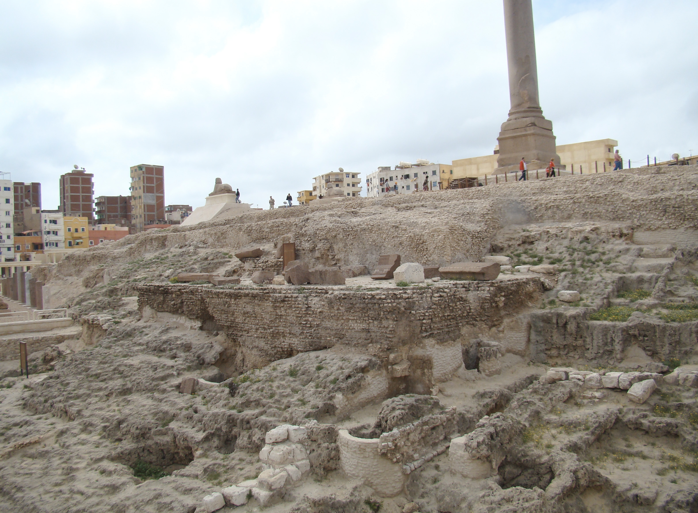
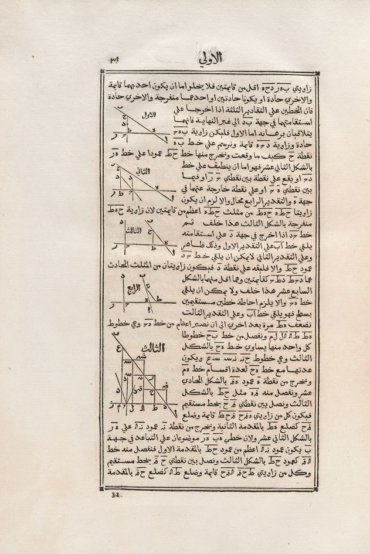

The ancient world · An illustrated history
The Library of Alexandria
The rise and fall of the ancient world’s greatest centre of knowledge
Begin the story ↓O. Von Corven, nineteenth-century artistic reconstruction of the Library; not a contemporary view. Public domain. Wikimedia Commons.
{kind=link}
Few institutions from the ancient world have acquired as much fame as the Library of Alexandria. It has become a symbol of ancient knowledge and, equally, of the destruction of knowledge. Stories about its end have blamed Julius Caesar, Roman emperors, Christian mobs and, centuries later, Muslim conquerors. The reality is more complicated. The Library was not created in isolation, nor does the evidence point to its disappearance in a single dramatic event. Its history was tied to the rise of the Hellenistic world, the Ptolemaic dynasty, Roman rule and eventually the religious transformation of the Roman Empire.
To understand the Library, we therefore have to begin before Alexandria itself existed—with Macedon, Philip II and Alexander the Great.
From Macedon to Alexandria
In the fourth century BCE, Philip II of Macedon transformed Macedonia into the dominant military power of the Greek world. His son, Alexander, received an extraordinary education. Among his teachers was the philosopher Aristotle, who taught Alexander and other young Macedonian nobles. Alexander grew up alongside men who would later become important figures in his campaigns and the world that followed them.
After Philip was assassinated in 336 BCE, the twenty-year-old Alexander became king. Within only a few years, he launched his invasion of the Persian Empire.
Alexander defeated the Persian king Darius III and conquered an enormous territory stretching from Greece and Egypt through Persia and into Central and South Asia. His conquests created the conditions for the spread of what historians call Hellenistic culture: a world in which Greek language, institutions and intellectual traditions interacted with the much older civilizations of Egypt, Persia, Mesopotamia and the eastern Mediterranean.
During his conquest of Egypt, Alexander founded a new city on the Mediterranean coast in 331 BCE.
He named it Alexandria.
Its location was remarkably advantageous. Alexandria faced the Mediterranean while standing close to the Nile system, connecting the trade of Egypt and Africa with the wider Mediterranean world. In time, it became one of the largest, wealthiest and most intellectually important cities of antiquity.
Alexander himself never saw what the city eventually became.
He died unexpectedly in Babylon in 323 BCE, at only thirty-two years old, leaving behind an enormous empire but no clear adult successor.[1]
An Interesting Story: “To the Strongest”
A famous later tradition claims that, as Alexander was dying, he was asked who should inherit his empire and replied, “to the strongest.” Whether Alexander actually said this is uncertain, but the phrase accurately describes what followed.
His generals began fighting among themselves in a series of conflicts known as the Wars of the Diadochi, or the Wars of Alexander's Successors.
Alexander's empire eventually broke into several major Hellenistic kingdoms. Ptolemy, one of Alexander's generals, established himself in Egypt. Seleucus created another enormous kingdom across much of the former Persian Empire. Other successor states appeared elsewhere.[2]
It was under Ptolemy and his descendants that Alexandria became much more than another Mediterranean city.
It became a centre of knowledge.

{kind=link}
The Birth of the Library
Ptolemy I Soter established the Ptolemaic dynasty in Egypt. Although the Ptolemies ruled an overwhelmingly Egyptian population, the ruling dynasty was Macedonian Greek, and Alexandria developed primarily as a Greek-speaking Hellenistic city.
Under Ptolemy I and his son Ptolemy II Philadelphus, Alexandria became the centre of an ambitious intellectual project. The exact foundation date of the Library is uncertain, and scholars debate whether its establishment belongs principally to Ptolemy I or Ptolemy II, but it clearly emerged from the cultural programme of the early Ptolemaic dynasty.[3]
At its heart stood the Mouseion—literally an institution dedicated to the Muses, from which the modern word museum ultimately derives.
The Mouseion was not a museum in our modern sense. It was closer to a royal research institution or scholarly community. Scholars could live, study, write and debate there under royal patronage.
Associated with the Mouseion was what became known as the Great Library of Alexandria.[3]
Its ambition was extraordinary: the Ptolemies attempted to gather an enormous body of written knowledge into Alexandria.
Scholars, poets, mathematicians, astronomers, physicians and philosophers were attracted to the city. Manuscripts were collected, copied, compared and edited. Alexandrian scholars did not merely preserve texts; they compared different copies and attempted to establish authoritative versions of older works, particularly the works of Homer and other Greek writers.
Traditions describe an aggressive Ptolemaic policy of acquiring manuscripts. According to later accounts, books arriving on ships at Alexandria could be taken for copying, with the Library retaining the originals and returning copies. Some stories about the scale of Ptolemaic collecting may have grown in the telling, but they reflect the extraordinary reputation the Library acquired.
The city soon possessed another famous monument.
On the nearby island of Pharos, the Ptolemies constructed the great Lighthouse of Alexandria, traditionally counted among the Seven Wonders of the Ancient World.
Alexandria therefore became simultaneously a royal capital, commercial port and intellectual centre.

{kind=link}
A Meeting Place of Civilizations
Greek culture dominated the political and intellectual institutions of Ptolemaic Alexandria, but Egypt was certainly not culturally empty before Alexander arrived.
Egypt possessed thousands of years of its own religious, mathematical, medical and administrative traditions. To the east lay the intellectual traditions of Mesopotamia and Persia.
The Hellenistic world brought these civilizations into closer contact.
This does not mean that Greeks, Egyptians and other communities simply blended into one culture. Their identities often remained distinct, and Alexandria could experience serious ethnic, social and religious tensions.
Nevertheless, the city became one of antiquity's great intellectual meeting places.
Among the scholars associated with Alexandria was Euclid, whose Elements became one of the most influential mathematical works in history. Another was Eratosthenes, who served as chief librarian and produced a remarkably accurate calculation of the circumference of the Earth.
Alexandria also contained a large Jewish community. In the Hellenistic Egyptian environment, the Hebrew scriptures were translated into Greek in the version traditionally known as the Septuagint.
The Library was therefore more than shelves of scrolls. It belonged to an entire intellectual ecosystem built around Alexandria.

{kind=link}
The Ptolemies, Seleucids and the Rise of Rome
Meanwhile, Alexander's successor kingdoms frequently fought one another.
The Ptolemaic Kingdom of Egypt and the Seleucid Empire became major rivals, particularly over territories in the eastern Mediterranean.
At the same time, another power was becoming increasingly important: Rome.
One particularly dramatic example came in 168 BCE, when the Seleucid king Antiochus IV Epiphanes invaded Egypt.
Rome intervened.
The Roman envoy Gaius Popillius Laenas confronted Antiochus and demanded that he withdraw. According to the famous account, when Antiochus asked for time to consider Rome's demand, Popillius drew a circle around him in the sand and demanded an answer before he stepped outside it.[4]
Antiochus backed down.
The story demonstrated how dramatically the balance of power had changed. Egypt was still formally ruled by the Ptolemies, but Rome had become powerful enough to dictate political outcomes in the Hellenistic East.
Eventually, Rome became directly involved in a Ptolemaic civil war.
And this brought the first great fire associated with the Library.

{kind=link}
Julius Caesar Comes to Alexandria
By the first century BCE, the Roman Republic itself was being torn apart by civil war.
Two of its most powerful figures, Julius Caesar and Pompey, became enemies. After Caesar defeated Pompey's forces, Pompey fled to Egypt.
Egypt was itself experiencing a dynastic conflict between Cleopatra VII and her younger brother Ptolemy XIII.
Hoping to gain Caesar's favor, advisers of Ptolemy XIII murdered Pompey after he arrived in Egypt. Caesar subsequently became involved in the struggle between Cleopatra and her brother and supported Cleopatra.
Fighting erupted in Alexandria.
During the conflict in 48 BCE, Caesar ordered ships in Alexandria's harbor to be burned to prevent them from falling into enemy hands.
The fire spread.
Ancient writers report the destruction of books, although their accounts disagree about both the number and location. Seneca, citing the now-lost account of Livy, gives a figure of 40,000 books, while Plutarch later wrote that the fire destroyed the “great library.”[5]
This became the foundation of the famous claim that Julius Caesar destroyed the Library of Alexandria.
But the evidence does not support the idea that Caesar ended the institution.
The fire certainly occurred, and a substantial number of books may have been destroyed. Some evidence suggests that books stored in warehouses around the harbor were among the losses. Yet Alexandrian scholarship continued afterward. Most importantly, Strabo, who lived in Alexandria decades after Caesar's campaign, still described the Mouseion as an existing institution within the royal quarter.[6]
Caesar's fire was therefore a real disaster, but it was not the end of the Library's intellectual tradition.
Cleopatra, Mark Antony and the End of Ptolemaic Egypt
Caesar eventually returned to Rome, accumulated extraordinary political authority and was declared dictator perpetuo—dictator in perpetuity.
In 44 BCE, he was assassinated.
Another period of Roman civil war followed.
Cleopatra eventually allied herself personally and politically with the Roman general Mark Antony. Antony's rivalry with Octavian, Caesar's adopted heir, developed into another civil war.
Octavian defeated Antony and Cleopatra at the Battle of Actium in 31 BCE.
Both Antony and Cleopatra subsequently died by suicide.
In 30 BCE, Egypt was incorporated into the Roman world, bringing nearly three centuries of Ptolemaic rule to an end.
Alexandria remained enormously important under Roman rule. Its grain helped feed Rome, its port remained commercially valuable, and its intellectual traditions continued.
But the political world that had created the Great Library was gone.

{kind=link}
The Long Decline
This is where the history of the Library becomes considerably harder to reconstruct.
There was probably no single moment when the original Great Library suddenly disappeared.
The Mouseion survived into the Roman period, but institutions of this kind depended upon political patronage. Alexandria subsequently experienced political disturbances, imperial crises, warfare and changes in its intellectual institutions.
One particularly destructive period came during the third-century crisis of the Roman Empire.
During fighting involving Emperor Aurelian in the 270s CE, Alexandria suffered severe damage. The Brucheion, the old royal quarter in which the original Mouseion and Great Library had been situated, was devastated.
Alexandria again experienced violence under Diocletian, who besieged the city in 297–298 CE following a rebellion.
By this point, it becomes extremely difficult to determine what, if anything, remained of the original Ptolemaic Great Library as a distinct institution.
But Alexandria possessed another major intellectual and religious complex:
the Serapeum.

.jpg){kind=link}
The Serapeum and the Daughter Library
The Serapeum was a magnificent temple complex dedicated to Serapis, a deity whose cult developed under the Ptolemies and combined Greek and Egyptian religious elements.
Ancient evidence associates the Serapeum with a substantial collection of books, traditionally called the daughter library of Alexandria.
Some modern scholarship goes considerably further. Evidence from Christian writers including Tertullian, Epiphanius and John Chrysostom has been used to argue that by late antiquity the Serapeum had effectively become the successor to the old Alexandrian library tradition.[7]
This distinction matters.
When we talk about the “Library of Alexandria” across several centuries, we may actually be talking about several connected institutions: the original royal Library, the Mouseion, other collections scattered around Alexandria, and the library of the Serapeum.
By late antiquity, the Serapeum was also not simply a neutral warehouse containing books.
It was one of the great surviving institutions of Alexandrian pagan religion and culture.
That became increasingly important as the Roman Empire itself changed.
Christianity Comes to Power
Christianity grew dramatically throughout the Roman Empire during the first centuries CE. Christians themselves periodically suffered imperial persecution, sometimes severely.
Then the political situation changed.
Emperor Constantine legalized and patronized Christianity during the fourth century. Under Theodosius I, Nicene Christianity became the officially supported imperial orthodoxy, while imperial policy became increasingly hostile toward traditional pagan worship.
In 391 CE, imperial legislation prohibited pagan sacrifices and restricted pagan religious activity.
In Alexandria, these policies intersected with an already volatile religious environment.
The city's powerful bishop was Theophilus of Alexandria.
Conflict erupted after pagan religious objects were exposed and mocked by Christians under Theophilus's authority. Pagans responded violently, and some occupied the Serapeum, using the temple complex as a stronghold. Christians were killed during the fighting.
The dispute reached imperial authority.
The pagan resistance was suppressed, and the Serapeum was ultimately handed over for destruction.
A Christian crowd entered the complex.
The enormous cult statue of Serapis was smashed. Pagan religious objects were destroyed, the temple was dismantled, and Christian symbols replaced those of the old religion. Contemporary Christian histories describe the destruction as a victory over paganism.[8]
This was therefore not an accidental fire.
Nor was the Serapeum merely an unrelated building that happened to become caught in street violence.
Christians deliberately destroyed the Serapeum as one of Alexandria's major institutions of pagan religion.
The difficult question is what happened to its books.
Did the Christian Destruction of the Serapeum Destroy the Library?
This is where the surviving evidence has to be treated carefully.
The Christian destruction of the Serapeum in 391 CE is not seriously in dispute.[8]
Neither is the Serapeum's historical association with a library.
What is disputed is how large a collection still existed there in 391.
One interpretation holds that the great collections had largely disappeared before the destruction of the temple. On this reading, the Christians unquestionably destroyed the Serapeum but did not destroy what could meaningfully still be called the Great Library.
There is, however, evidence supporting a stronger connection between the destruction of the Serapeum and the disappearance of Alexandria's remaining library tradition.
Historian Martin Hose, examining late-antique Christian sources, argues that the Serapeum had become Alexandria's principal library and successor to the original Ptolemaic institution. He further argues that the evidence of Orosius, writing in the early fifth century, indicates that the Christian destruction of the Serapeum included the destruction of its library.[7]
Orosius is particularly interesting because he visited Alexandria not many decades after the event and referred to book repositories in temples that stood empty in his own time.
This does not allow us to calculate how many books were destroyed or dispersed in 391. Nor can we simply assume that the Serapeum still contained the enormous collection traditionally attributed to the early Ptolemies.
But the possibility that the Christian destruction of the Serapeum also destroyed an important surviving Alexandrian library collection is a serious historical interpretation, not merely a popular legend.[7]
The most defensible conclusion is therefore straightforward:
The Christians unquestionably destroyed the Serapeum in 391 as part of the suppression of pagan religion. The Serapeum had historically contained an important library. There is scholarly disagreement over how much of that library remained, but there is evidence supporting the argument that books and the surviving library institution were also lost during the destruction.
Alexandria After the Serapeum
Intellectual life in Alexandria did not immediately disappear.
Destroying an institution does not automatically destroy every intellectual tradition surrounding it. Alexandria continued producing important scholars, both Christian and pagan.
One of the most famous was Hypatia, a pagan Neoplatonist philosopher, mathematician and teacher.
In 415 CE, amid a political struggle involving Bishop Cyril of Alexandria and the Roman prefect Orestes, Hypatia was seized by a Christian mob and brutally murdered.[9]
Her murder nevertheless illustrates how intense Alexandria's political and religious conflicts had become.
Over the following centuries, the intellectual world of antiquity continued to change. Christian scholars inherited, preserved, debated and sometimes rejected elements of Greek philosophy and science.
The old Ptolemaic institution, however, had disappeared.
So Who Destroyed the Library?
The question has no simple one-word answer because the Library existed in different forms over many centuries.
Julius Caesar's fire in 48 BCE destroyed books, possibly many thousands of them, but it demonstrably did not bring Alexandrian scholarship to an end.[5][6]
Roman warfare and political instability, particularly during the third century, devastated the old royal quarter in which the original Great Library and Mouseion had existed.
Changes in patronage and institutions gradually weakened the scholarly system created by the Ptolemies.
And in 391 CE, Christians deliberately destroyed the Serapeum, an important pagan religious and intellectual centre that had historically housed a major library. Whether the collection destroyed or dispersed there represented the final substantial continuation of the ancient Library remains debated, although modern scholarship has presented significant evidence in favor of that interpretation.[7][8]
The disappearance of the Library should therefore be understood as a process extending across centuries, rather than one spectacular fire.
Its collections were damaged, moved, dispersed and destroyed at different times.
Did Alexandria's Knowledge Really Disappear?
The physical institution disappeared.
The knowledge did not.
Greek scientific, philosophical and medical works survived through many different communities and institutions. Alexandria itself remained intellectually active long after the golden age of the Ptolemies. Elsewhere in the eastern Roman and Persian worlds, scholars continued studying Greek learning.
Many Greek works entered Syriac-speaking Christian scholarly traditions, particularly works of philosophy and medicine.
Another important intellectual centre developed at Gundeshapur in Sasanian Persia, particularly famous in later tradition for medicine and scholarship.
Then, after the rise of the Abbasid Caliphate, Baghdad became one of the great intellectual centres of the medieval world.
During the enormous translation movement of the eighth through tenth centuries, scholars translated Greek scientific, philosophical and medical literature into Arabic, sometimes directly from Greek and often through Syriac intermediaries.
Works associated with Aristotle, Euclid, Galen, Ptolemy and many others entered Arabic intellectual culture. Muslim, Christian, Jewish, Persian and other scholars participated in this environment.
There is something meaningful behind this connection. The scientific and philosophical traditions cultivated in Hellenistic centres such as Alexandria survived through multiple Greek, Syriac and Persian scholarly networks before becoming part of the much larger intellectual movement centred on Abbasid Baghdad.
Knowledge moved even when institutions disappeared.

{kind=link}
The Legacy of Alexandria
The Library of Alexandria remains powerful partly because of what it represents.
More than two thousand years ago, the Ptolemies attempted something extraordinary: to collect an enormous portion of the world's written knowledge in one place.
The institution grew out of Alexander's conquests and the Hellenistic world that followed them. It flourished under the Ptolemies, survived Egypt's transformation into a Roman province, suffered fires and warfare, and gradually lost the political and institutional environment that had sustained it.
Caesar's fire damaged collections but did not destroy Alexandrian scholarship.
Roman warfare devastated the old royal quarter.
And in 391 CE, amid the Christianization of the Roman Empire and the suppression of pagan worship, Christians deliberately destroyed the Serapeum. Whether they destroyed the last substantial surviving library of Alexandria with it remains debated, but the possibility is supported by serious historical evidence.
There was therefore probably no single day on which the Library of Alexandria was destroyed.
Its decline took centuries.
But perhaps the most remarkable part of its history is that destroying libraries did not destroy the knowledge they had helped preserve.
Buildings were destroyed. Dynasties disappeared. Religions rose and declined. Empires conquered one another. Yet knowledge continued to move.
Texts were copied. Languages changed. Scholars carried ideas between civilizations.
From the Hellenistic world through Roman and late-antique scholarship, through Greek-, Syriac- and Persian-speaking intellectual communities, and eventually into the flourishing scholarly culture of the medieval Islamic world, much of the intellectual heritage represented by Alexandria survived long after the Library itself had disappeared.
The institution died.
Much of the knowledge did not.
References and Sources
[1] Arrian, Anabasis of Alexander, Books I–VII; Plutarch, Life of Alexander. These are among the principal surviving ancient narrative sources for Alexander's campaigns and death.
[2] Diodorus Siculus, Bibliotheca Historica, Books XVIII–XX; Plutarch, Life of Eumenes and Life of Demetrius. These works provide important evidence for the Wars of the Diadochi and the fragmentation of Alexander's empire.
[3] Strabo, Geography XVII.1.8; Andrew Erskine, “Culture and Power in Ptolemaic Egypt: The Museum and Library of Alexandria,” Greece & Rome 42, no. 1 (1995), pp. 38–48. Erskine notes that the surviving evidence does not allow us to determine with certainty whether the Library and Mouseion were founded under Ptolemy I or Ptolemy II.
[4] Polybius, Histories XXIX.27; Livy, Ab Urbe Condita XLV.12. Both preserve the famous confrontation between Popillius Laenas and Antiochus IV.
[5] Julius Caesar, Bellum Civile III; Seneca, De Tranquillitate Animi 9.5; Plutarch, Life of Caesar 49; Cassius Dio, Roman History XLII. The sources agree that fire accompanied the Alexandrian fighting but differ over what was destroyed and the number of books lost. Modern examination of the ancient testimony likewise cautions against treating Caesar's fire as the definitive destruction of the Library.
[6] Strabo, Geography XVII.1.8. Strabo lived in Alexandria after Caesar's campaign and describes the Mouseion as an existing part of the royal quarter, providing particularly important evidence against the claim that Caesar permanently destroyed the Alexandrian scholarly institution.
[7] Martin Hose, “The Destruction of the Serapeum of Alexandria, Its Library, and the Immediate Reactions,” Klio (2022). Hose argues from Tertullian, Epiphanius, John Chrysostom, Orosius and other evidence that the Serapeum had become the successor to the original Alexandrian library and that its library was destroyed together with the temple in 391. This remains an area of scholarly debate.
[8] Socrates Scholasticus, Ecclesiastical History V.16; Sozomen, Ecclesiastical History VII.15. These Christian sources describe the religious conflict in Alexandria and destruction of the Serapeum. The relationship between this event and the final fate of the Alexandrian library collections remains debated.
[9] Socrates Scholasticus, Ecclesiastical History VII.15. Socrates provides one of the principal ancient accounts of the political conflict surrounding Hypatia and her murder by a Christian crowd in 415 CE.